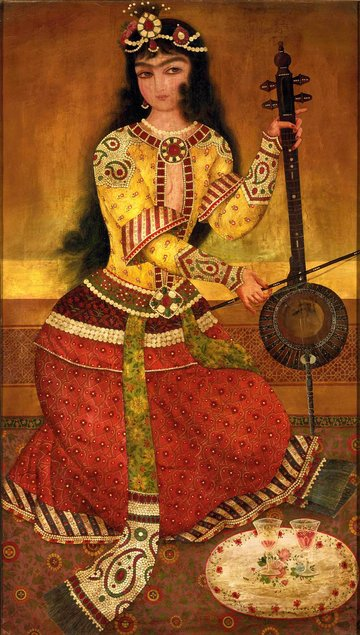

–
0¢
0Hz
Beat:60 bpm /
A4:434Hz
Choose a piece
403020100-10-20-30-40
Tap a Start button to begin.

This app listens through your microphone to track pitch and rhythm for kamancheh, violin, and other bowed strings — live, as you play. Nothing is recorded or sent anywhere; it all stays on this device.